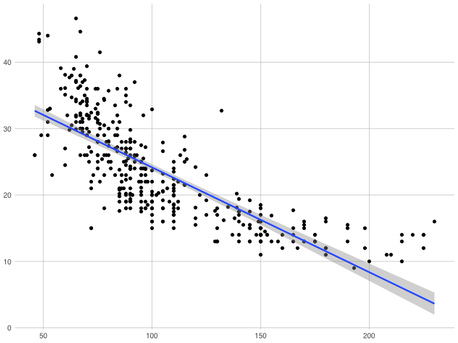

Unit 10 Live Assignment
Jaclyn Ann Coate
2019-11-12
(1) Cars: Fit model, hypothesis test, & relationship description
(1a) Fit the model: MPG = B_0 + B_1 * Weight + E
- Model: mpg = 46.27 + Weight * -.00766
- Scatterplot

- Model: mpg = 46.27 + Weight * -.00766
- Scatterplot with linear model

- Model: mpg = 46.27 + Weight * -.00766
- Confidence and Prediction Intervals

- Model: mpg = 46.27 + Weight * -.00766
- Code Output
##
## Call:
## lm(formula = MPG ~ Weight, data = MPGweight)
##
## Residuals:
## Min 1Q Median 3Q Max
## -12.0008 -2.7684 -0.3342 2.1245 16.4920
##
## Coefficients:
## Estimate Std. Error t value Pr(>|t|)
## (Intercept) 46.2734424 0.7974987 58.02 <2e-16 ***
## Weight -0.0076613 0.0002577 -29.73 <2e-16 ***
## ---
## Signif. codes: 0 '***' 0.001 '**' 0.01 '*' 0.05 '.' 0.1 ' ' 1
##
## Residual standard error: 4.332 on 392 degrees of freedom
## Multiple R-squared: 0.6927, Adjusted R-squared: 0.6919
## F-statistic: 883.6 on 1 and 392 DF, p-value: < 2.2e-16## (Intercept)
## 46.27344## Weight
## -0.007661335(1b) 6 Step Hypothesis Test of Slope (Beta_1)
- Conduct a 6-step hypothesis test of the slope.
- That is, test the claim that the slope is significantly different from zero. Show all 6 steps and quantify your uncertainty by including a 95% confidence interval for the slope.
- Assumptions Met: (a) Subpopulations of MPGs for a fixed weight are normally distributed. (b) Means of the distributions of MPGs for a fixed weight are linearly related to weight.
- Ho : beta_1 = 0; Ha : beta_1 does not = 0
- Critical Value = 1.966
- Tstatistic = -29.73
- p-value < 0.0001
- Reject the Ho
- Conclusion: There is overwhelming evidence at the alpha = 0.05 level of significance (p-value < 0.0001) to suggest that the data are linearly correlated or that the slope is nonzero. Our best estimate is 47.3 and we have 95% confidence that the intercept falls between [44.71 47.84].
- That is, test the claim that the slope is significantly different from zero. Show all 6 steps and quantify your uncertainty by including a 95% confidence interval for the slope.
Hypothesis test code output
## [1] -1.966034##
## Call:
## lm(formula = MPG ~ Weight, data = MPGweight)
##
## Residuals:
## Min 1Q Median 3Q Max
## -12.0008 -2.7684 -0.3342 2.1245 16.4920
##
## Coefficients:
## Estimate Std. Error t value Pr(>|t|)
## (Intercept) 46.2734424 0.7974987 58.02 <2e-16 ***
## Weight -0.0076613 0.0002577 -29.73 <2e-16 ***
## ---
## Signif. codes: 0 '***' 0.001 '**' 0.01 '*' 0.05 '.' 0.1 ' ' 1
##
## Residual standard error: 4.332 on 392 degrees of freedom
## Multiple R-squared: 0.6927, Adjusted R-squared: 0.6919
## F-statistic: 883.6 on 1 and 392 DF, p-value: < 2.2e-16## 2.5 % 97.5 %
## (Intercept) 44.705532760 47.841351974
## Weight -0.008168061 -0.007154609(1c) Describe the relationship between MPG and Weight
- Describe the relationship between miles per gallon and the weight of the car
- Interpret the slope parameter.
- Include a 95% confidence interval in your interpretation.
With the slope at -0.00766 we can confirm that MPG and Weight have a negative linear relationship. It is estimated that for every increase in 1,000 lb in weight, the estimated MPG will decrease .00766 in MPG. We are 95% confident that this decrease will be between .00817 and .00715 miles per gallon.
(2) Cars: Conduct an internal n-fold (leave one out) cross validation of the following SLR models
(2a) Model 1: MPG = B_0 + B_1 * Weight + E
- MSPE Model 1 = 15.00668
## Observations: 394
## Variables: 2
## $ Weight <dbl> 3504, 3693, 3436, 3433, 3449, 4341, 4354, 4312, 4425, 385…
## $ MPG <dbl> 18, 15, 18, 16, 17, 15, 14, 14, 14, 15, 15, 14, 15, 14, 2…##
## Call:
## lm(formula = MPG ~ Weight, data = MPGTrain)
##
## Residuals:
## Min 1Q Median 3Q Max
## -11.8778 -2.8326 -0.2011 2.1961 16.6167
##
## Coefficients:
## Estimate Std. Error t value Pr(>|t|)
## (Intercept) 45.883464 0.949798 48.31 <2e-16 ***
## Weight -0.007536 0.000310 -24.31 <2e-16 ***
## ---
## Signif. codes: 0 '***' 0.001 '**' 0.01 '*' 0.05 '.' 0.1 ' ' 1
##
## Residual standard error: 4.476 on 294 degrees of freedom
## Multiple R-squared: 0.6678, Adjusted R-squared: 0.6667
## F-statistic: 591.1 on 1 and 294 DF, p-value: < 2.2e-16## [1] 15.00668(2b) Model 2: MPG = B_0 + B_1 * Weight + B_2 * Weight ^2 + E
- MSPE Model 2 = 14.07949
##
## Call:
## lm(formula = MPG ~ Weight + WeightSqr, data = MPGTrain)
##
## Residuals:
## Min 1Q Median 3Q Max
## -12.5733 -2.7874 -0.4291 1.8208 16.1065
##
## Coefficients:
## Estimate Std. Error t value Pr(>|t|)
## (Intercept) 6.232e+01 3.478e+00 17.920 < 2e-16 ***
## Weight -1.861e-02 2.281e-03 -8.160 9.95e-15 ***
## WeightSqr 1.727e-06 3.524e-07 4.899 1.60e-06 ***
## ---
## Signif. codes: 0 '***' 0.001 '**' 0.01 '*' 0.05 '.' 0.1 ' ' 1
##
## Residual standard error: 4.311 on 293 degrees of freedom
## Multiple R-squared: 0.693, Adjusted R-squared: 0.6909
## F-statistic: 330.7 on 2 and 293 DF, p-value: < 2.2e-16## [1] 14.07949(2c) Which model is favored by this cross validation?
- MSPE Model 1: 15.01 > MSPE Model 2: 14.08
- Therefore we favor Model 2 (the smaller MSPE the better)
(2d) Describe the relationship between miles per gallon and the weight of the car (if it has changed) (again making sure to quantify any uncertainty you may have.)
There is overwhelmng evidence at the alph = 0.05 level that there is a non zero slope in the relationship between MPG and Weight of cars (p-value < .0001). This has not changed from our previous conclusion in problem 1.
(2e) Use the favored model to estimate the mean mpg of cars that weigh 2000 lbs.
- The estimated mean MPG of cars that weigh 2000 lbs is 31.999, we have a confidence interval of the MPG falling between between 31.12 and 32.88.
## fit lwr upr
## 1 31.9986 31.11546 32.88174(3) Cars: We would like to assess the relationship (interpret slope parameter) between mpg and horsepower. Notice that some of the horsepowers are missing.
(3a) Impute (predict and insert) the missing horsepowers by fitting a regression model.
- You may use any of the variables as regressors EXCEPT for mps (since we will later be using horsepower to predict mpg).

- Model 3.1: Horsepower = B_0 + B_1 * Acceleration + E
- Model 3.1 MSPE = 684.3713
##
## Call:
## lm(formula = Horsepower ~ Acceleration, data = Train3)
##
## Residuals:
## Min 1Q Median 3Q Max
## -66.98 -18.09 -3.19 18.63 117.79
##
## Coefficients:
## Estimate Std. Error t value Pr(>|t|)
## (Intercept) 259.5183 9.9413 26.11 <2e-16 ***
## Acceleration -9.9625 0.6334 -15.73 <2e-16 ***
## ---
## Signif. codes: 0 '***' 0.001 '**' 0.01 '*' 0.05 '.' 0.1 ' ' 1
##
## Residual standard error: 28.52 on 292 degrees of freedom
## Multiple R-squared: 0.4587, Adjusted R-squared: 0.4568
## F-statistic: 247.4 on 1 and 292 DF, p-value: < 2.2e-16## [1] 684.3713- Model 3.2: Horsepower = B_0 + B_1 * Acceleration + B_2 * Cylinders + E
- Model 3.2 MSPE = 263.3736
##
## Call:
## lm(formula = Horsepower ~ Acceleration + Cylinders, data = Train3)
##
## Residuals:
## Min 1Q Median 3Q Max
## -33.318 -12.949 -1.698 9.702 64.922
##
## Coefficients:
## Estimate Std. Error t value Pr(>|t|)
## (Intercept) 103.1348 9.3204 11.07 <2e-16 ***
## Acceleration -5.2677 0.4416 -11.93 <2e-16 ***
## Cylinders 15.2995 0.6912 22.14 <2e-16 ***
## ---
## Signif. codes: 0 '***' 0.001 '**' 0.01 '*' 0.05 '.' 0.1 ' ' 1
##
## Residual standard error: 17.44 on 291 degrees of freedom
## Multiple R-squared: 0.7983, Adjusted R-squared: 0.7969
## F-statistic: 575.8 on 2 and 291 DF, p-value: < 2.2e-16## [1] 263.3736- Model 3.3: Horsepower = B_0 + B_1 * Acceleration + B_2 * Cylinders + B_3 * Displacement + E
- Model 3.3 MSPE = 159.4105
##
## Call:
## lm(formula = Horsepower ~ Acceleration + Cylinders + Displacement,
## data = Train3)
##
## Residuals:
## Min 1Q Median 3Q Max
## -36.701 -8.751 -1.018 7.995 71.384
##
## Coefficients:
## Estimate Std. Error t value Pr(>|t|)
## (Intercept) 118.98969 8.07814 14.730 <2e-16 ***
## Acceleration -4.18298 0.38983 -10.730 <2e-16 ***
## Cylinders -0.97746 1.65151 -0.592 0.554
## Displacement 0.28892 0.02739 10.549 <2e-16 ***
## ---
## Signif. codes: 0 '***' 0.001 '**' 0.01 '*' 0.05 '.' 0.1 ' ' 1
##
## Residual standard error: 14.85 on 290 degrees of freedom
## Multiple R-squared: 0.8542, Adjusted R-squared: 0.8527
## F-statistic: 566.5 on 3 and 290 DF, p-value: < 2.2e-16## [1] 159.4105- Model 3.4: Horsepower = B_0 + B_1 * Acceleration + B_2 * Displacement + E
- Model 3.4 MSPE = 161.1448
##
## Call:
## lm(formula = Horsepower ~ Acceleration + Displacement, data = Train3)
##
## Residuals:
## Min 1Q Median 3Q Max
## -36.407 -8.812 -0.993 7.660 70.617
##
## Coefficients:
## Estimate Std. Error t value Pr(>|t|)
## (Intercept) 116.889358 7.248827 16.12 <2e-16 ***
## Acceleration -4.201745 0.388107 -10.83 <2e-16 ***
## Displacement 0.273771 0.009751 28.08 <2e-16 ***
## ---
## Signif. codes: 0 '***' 0.001 '**' 0.01 '*' 0.05 '.' 0.1 ' ' 1
##
## Residual standard error: 14.83 on 291 degrees of freedom
## Multiple R-squared: 0.854, Adjusted R-squared: 0.853
## F-statistic: 851.4 on 2 and 291 DF, p-value: < 2.2e-16## [1] 161.1448- Using Model 3.3: based on the lowest MSPE to find NAs in Horsepower
## Observations: 2
## Variables: 9
## $ Model <chr> "renault 18i", "amc concord dl"
## $ MPG <dbl> 34.5, 23.0
## $ Cylinders <dbl> 4, 4
## $ Displacement <dbl> 100, 151
## $ Horsepower <dbl> NA, NA
## $ Weight <dbl> 2320, 3035
## $ Acceleration <dbl> 15.8, 20.5
## $ Year <dbl> 81, 82
## $ Origin <chr> "Europe", "US"## fit lwr upr
## 1 77.88043 75.46348 80.29739## fit lwr upr
## 1 72.95519 68.14317 77.7672- Inserted predicted values and check that NAs in Horspower are gone in completely merged data set
## Model MPG Cylinders Displacement Horsepower Weight
## 1 renault 18i 34.5 4 100 77.88043 2320
## 2 amc concord dl 23.0 4 151 72.95519 3035
## Acceleration Year Origin
## 1 15.8 81 Europe
## 2 20.5 82 US## /\ /\
## { `---' }
## { O O }
## ==> V <== No need for mice. This data set is completely observed.
## \ \|/ /
## `-----'
## Model MPG Cylinders Displacement Horsepower Weight Acceleration Year
## 394 1 1 1 1 1 1 1 1
## 0 0 0 0 0 0 0 0
## Origin
## 394 1 0
## 0 0(3b) Assess the relationship between the mpg and the slope. Make sure and include estimates of your uncertainty (ie. Confidence intervals).
- MPG Model: mpg = B_0 + B_1 * Horsepower
- With the slope at -.1579 we can confirm that MPG and Horsepower have a negative linear relationship. It is estimated that for every single unit increase in Horsepower, the estimated MPG will decrease .1579 in fuel efficiency. We are 95% confident that this decrease will happen between .171 and .145 miles per gallon.
##
## Call:
## lm(formula = MPG ~ Horsepower, data = cars.hp)
##
## Residuals:
## Min 1Q Median 3Q Max
## -13.5753 -3.2619 -0.3473 2.7642 16.9196
##
## Coefficients:
## Estimate Std. Error t value Pr(>|t|)
## (Intercept) 39.941536 0.716541 55.74 <2e-16 ***
## Horsepower -0.157864 0.006446 -24.49 <2e-16 ***
## ---
## Signif. codes: 0 '***' 0.001 '**' 0.01 '*' 0.05 '.' 0.1 ' ' 1
##
## Residual standard error: 4.913 on 392 degrees of freedom
## Multiple R-squared: 0.6048, Adjusted R-squared: 0.6038
## F-statistic: 599.8 on 1 and 392 DF, p-value: < 2.2e-16## 2.5 % 97.5 %
## (Intercept) 38.5327930 41.3502800
## Horsepower -0.1705367 -0.1451916- MPG Model: mpg = B_0 + B_1 * Horsepower
- Scatterplot and linear model fit line

(3c) Use your model and imputed data to estimate the mean mpg for a car with 250 horsepower.
- With our current model: mpg = 39.941536 + -0.157864 * Horsepower we would predict a MPG of -0.157864 at the Horsepower of 250. We are 95% confidence that if a car with 250 Horsepower was found it would have an MPG that fell between -1.4 and 2.38 miles per gallow.
- Upon looking at the scatter plot on the previous slide this MPG would make sense for the linear model. However, it is clear that this is not entirely a linear relationship. As you follow the data it begins to curve up as the x value continues to increase. In this caes I would recommend log transformation to further analyze this data and obtain the right model to fit this data (which does not seem to be linear at this time).
## fit lwr upr
## 1 0.4754919 -1.433681 2.384665